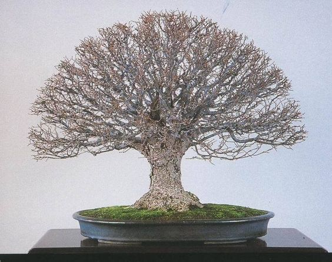
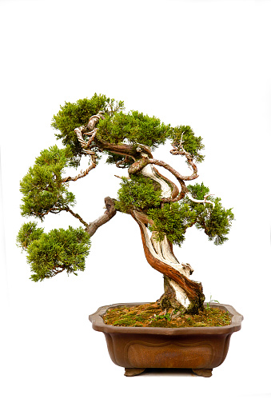
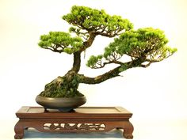
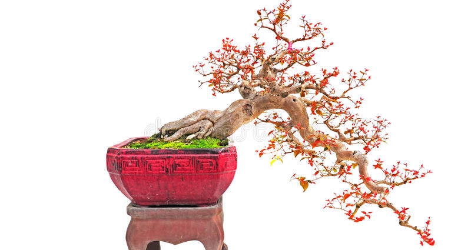
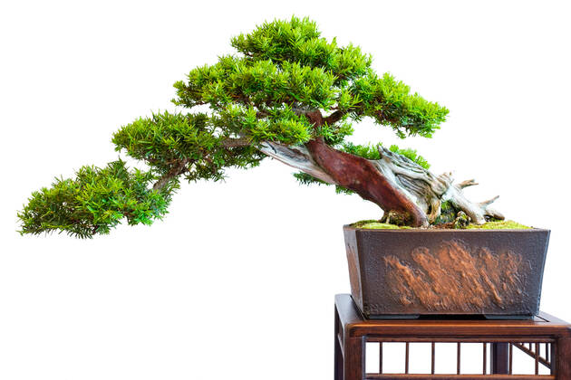
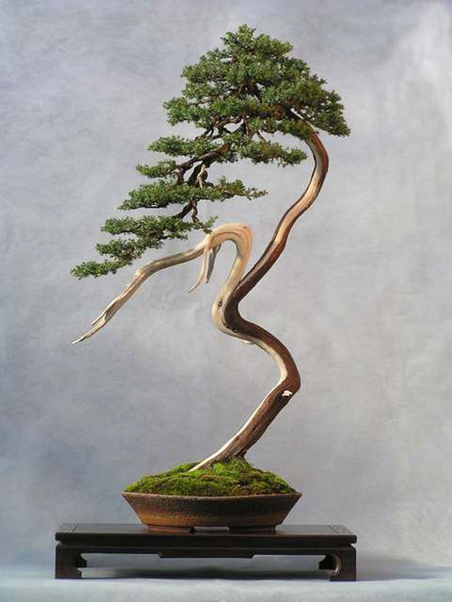
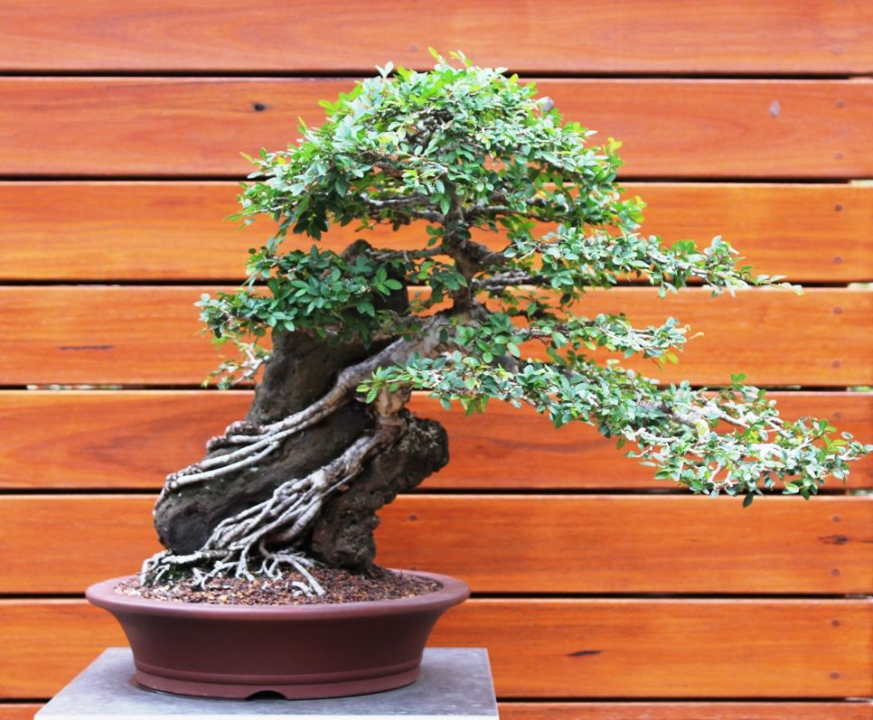
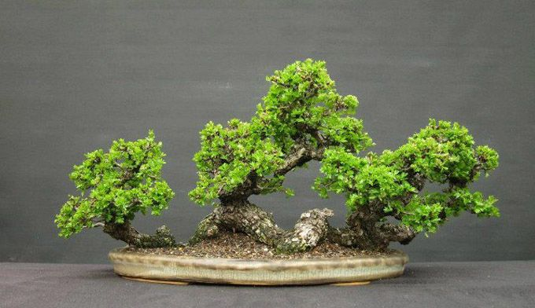

The different styles of Bonsai
Bonsais can be made into multiple forms or styles, just like in nature.
Here are the most common ones.
Broom style (Hokidachi)
The broom style is suitable for deciduous trees with extensive fine branching. The trunk is straight and upright and does not continue to the top of the tree; it branches in all directions up to about 1/3 the height of the tree. The branches and leaves form a ball-shaped crown, which also looks stunning during the winter months.
Formal upright style (Chokkan)

The formal upright style is a very common form of Bonsai. This style often occurs in nature, especially when the tree is exposed to a lot of light and does not face the problem of competing trees. For this style, the tapering of the upright growing trunk should be clearly visible. The trunk should therefore be thicker at the bottom and should get thinner and thinner with height. At about 1/4 of the total length of the trunk, branching should begin. The top of the tree must be formed by a single branch; the trunk must not reach the full height of the tree.
Informal upright style (Moyogi)
The informal upright style is common in both nature and Bonsai art. The trunk grows vertically more or less in the shape of a letter 'S' and at each curve branching occurs. The tapering of the trunk should be clearly visible, with the base of the trunk thicker than the highest portion.
Slanting Style (Shakan)
As a result of wind blowing in a dominant direction or when a tree grows in the shade and must bend towards the sun, the tree will lean in one direction. With Bonsai, the inclined style should develop at an angle of about 60 to 80 degrees to the ground. The roots are well developed on one side to keep the tree upright. On the side towards which the tree leans, the roots are clearly not as well developed.
Cascade Style (Kengai)
A tree living in the wild on a steep cliff can bend downwards as a result of various factors such as snow or falling rocks. These factors cause the tree to grow downwards. With Bonsai it can be difficult to keep a tree growing downwards because the direction of growth opposes the tree's natural tendency to grow upright. Cascade Bonsai are planted in tall pots. The tree should grow vertically upwards for a short stretch, but then bend downwards. The crown of the tree usually grows above the edge of the pot, but subsequent branches alternate left and right on the outside curves of an ‘S’-shaped trunk. These branches must grow out horizontally in order to maintain the balance of the tree.
Semi-Cascade Style (Han-Kengai)
The semi-cascade style, like the waterfall style, is found in nature on cliffs and on the banks of rivers and lakes. The trunk grows vertically for a short distance and then curves downwards/sideways. Unlike the cascade style, the semi-cascade trunk will never grow below the bottom of the pot. The canopy is usually above the rim of the vessel, while subsequent branches occur below the rim.
Literati Style
In nature, this style of tree is found in areas densely populated by many other trees, and competition is so fierce that the tree can only survive by growing taller than all others around it. The trunk grows crookedly upwards and is completely unbranched because the sun only reaches the top of the tree. To make sure it looks even tougher, some branches are “Jineados” (barked). When the bark is removed from one side of the trunk, the trunk is called a “Shari”. The idea is to demonstrate that the tree has to fight to survive. These trees are often placed in small round pots.
Double Trunk Style

The double trunk style is common in nature, but actually not so common in Bonsai art. Generally, both trunks will develop from a single root system, but it is also possible for the smaller trunk to develop from the larger trunk just above the ground. The two trunks will vary in diameter and length, the thicker and more developed trunk will grow almost vertically, while the smaller trunk will grow at a slight angle. Both trunks will contribute to a single crown of leaves/top.
Forest Style

The forest style looks a lot like the multi-trunk style, but the difference is that it is made up of multiple trees instead of one tree with multiple trunks. The most developed trees are planted in the middle of a large, shallow pot. On the sides, some smaller trees are planted to contribute to a single crown. Trees are planted not in a straight line, but in a staggered pattern, so the forest will look more realistic and natural.
Root Over Rock Style
In this style, the roots of the tree are growing in the crevices and holes in the rock. This means that there is not much room for the roots to develop and absorb nutrients. Trees that grow on rocks will never look really healthy. Therefore, it must be visible that the tree has to fight to survive. It is important to fertilize and water frequently, as there is not much space available to store water and nutrients. The rock on which Bonsai grows is often placed in a shallow pot, which is sometimes filled with water or fine gravel.
Raft Style
Sometimes a fallen tree can survive by pointing its branches upwards. The old root system can provide the branches with the nutrients they need to survive. After a while, new roots will start to grow, eventually taking over the function of the old root system. The old branches, which now point into the air, develop into trunks with multiple branches as a result of the increased influx of nutrients. These new trunks contribute to a single canopy.